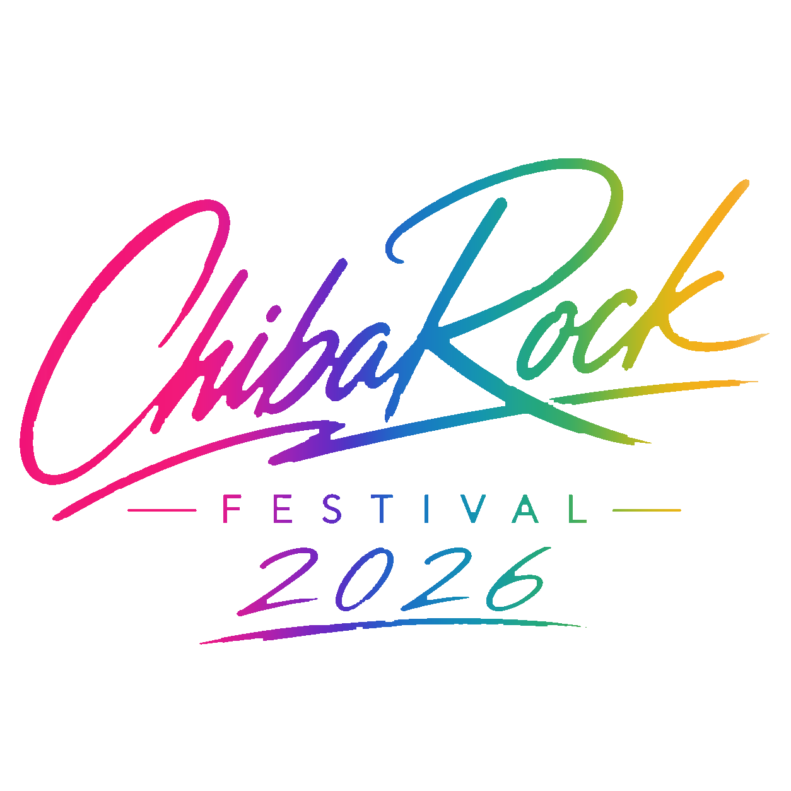
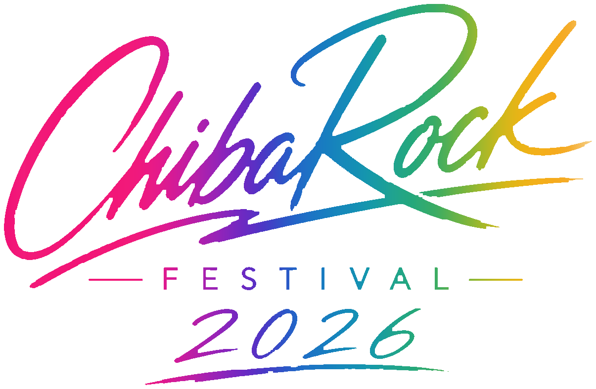
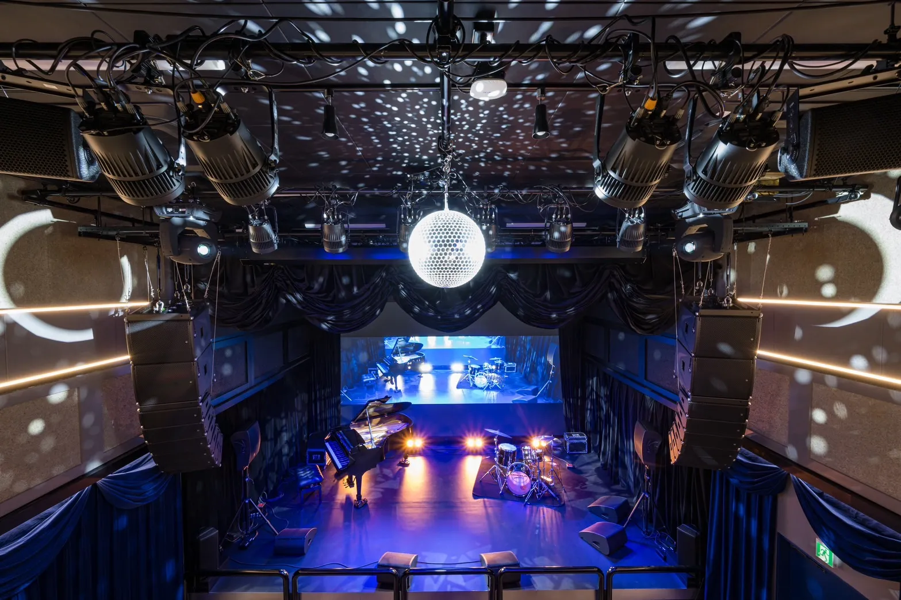

01
STG
２台のLes Paulが奏でるSlashな調べを今宵貴女に

Music Festival in Roppongi

ChibaRock Fes 最高の音楽体験を
2026.9.5 sat.
六本木GT LIVE TOKYO
TICKETARTISTS
写真をクリックすると拡大表示します（50音順）
01
２台のLes Paulが奏でるSlashな調べを今宵貴女に
02
オリジナル＆洋邦ロックの名曲をカバーする結成15周年の４人組ロックバンド。ChibaRock Festival主催。
03
「ノスタルジック・ジャパニーズ・ロック」をコンセプトに、どこか懐かしさのあるロックやポップスをモダンアプローチで 楽曲制作やライブを展開してます。
04
ゆるラテン系バンド、無国籍の「む」‼️
INFO
